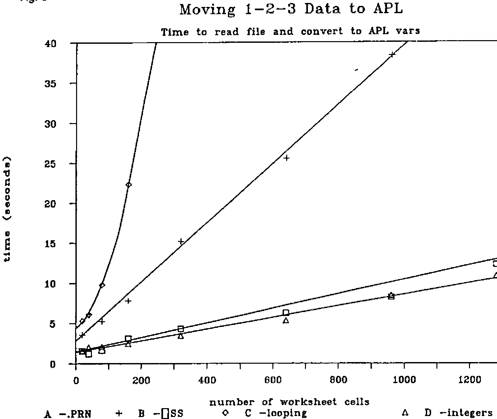
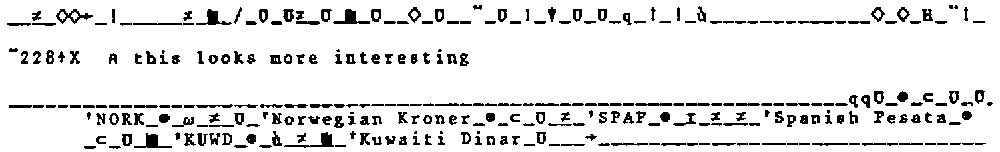

Moving data from 1-2-3 to APL
Vector 1:4, page 130
Transcribed from the printed issue; not yet reviewed. Read it in the PDF of the issue, page 130
Summary¶
This article describes methods of transferring data from a LOTUS 1-2-3 worksheet into an APL*PLUS/PC workspace. The merits of reading directly versus using an intermediate DOS file are examined.
Introduction¶
Why move data from 1-2-3 to APL? Are there signs of mass defection from LOTUS 1-2-3 to APL*PLUS/PC? Certainly not, but there is a need for APL and 1-2-3 programs to talk to each other. Both are successful PC products in their own right with solid reputations for speedy program development and flexibility. There is clearly a lot of overlapping capability, but a view of the areas in which one or other product excels will clearly depend on a person’s background. Typically a new PC user will be satisfied with the scope of 1-2-3 whereas a serious programmer may demand the extra power of a product such as APL*PLUS/PC.
Would a “hybrid” - an application written in both APL and 1-2-3 offer the best of both worlds? Consider the hypothetical example of a company budgeting system. The data flow might be:
1-2-3 → APL → 1-2-3 → APL → 1-2-3
- Skeleton input forms are designed and saved in 1-2-3
- APL reads the forms and customises them according to differing departmental requirements.
- Users enter the figures onto the prepared 1-2-3 worksheets. “Local” calculations and comments can be appended.
- APL is used to validate, consolidate, analyse and report.
- The 1-2-3 graphics facility is used to prepare bar-graphs of key totals on a pen-plotter.
APL is the “glue” which binds together the 1-2-3 parts of the application and adds advanced analysis and reporting. Now what are the advantages?
- Flexibility - development can evolve according to the available mix of user/programmer time and expertise.
- Shared data - greater accuracy and standardisation, less misplaced effort.
- Maintenance - The 1-2-3 User’s Manual will be adequate documentation for many parts of the system! Minor changes and new features can be added to the application without the direct involvement of the APL programmer.
And where will the line be drawn? Why insist that a simple - tedious even - part of the application be written in APL? Summing rows and columns with a few deft keystrokes is no longer a feature exclusive to APL, and most 1-2-3 users will be quite capable of writing programs of the “Add/Change/Delete/Print” variety themselves.
So assuming there is role for both PC products how easily can data be passed between them?
Foreign Correspondence¶
The heading of this section is taken from the chapter in the 1-2-3 User’s Manual which describes how 1-2-3 and other programs may pass data to and fro. For example 1-2-3 has a TRANSLATE facility enabling a worksheet (file extension .WKS) to be converted to a DIF standard file and vice-versa.
But for passing data to and from APL an obvious route is via an intermediate DOS file.
APL to 1-2-3:
workspace ---------------> DOS file ------------> worksheet
NWRITE FILE IMPORT
1-2-3 to APL:
worksheet ---------------> DOS file ------------> workspace
/PRINT FILE /NREAD
To move data from APL to 1-2-3 write an “unformatted” report to a DOS file with the APL*Plus/PC system function NWRITE (“native file write”). The data should be in distinct columns with double quotes around text fields. This ensures that from 1-2-3 a /FILE/IMPORT/NUMBERS command will put each item into a separate cell.
From 1-2-3 the /PRINT/FILE command prints a specified range to a DOS file (with file extension .PRN) instead of to a printer. The system function NREAD can then bring the data into a workspace as character data.
There is a second approach to moving data from 1-2-3 to APL: one can attempt to read the data directly. Obviously this requires a basic knowledge of how a worksheet is stored.
Let it be stated that our objective is limited solely to moving “displayed” 1-2-3 data. A column of “values” is to become a vector of numbers; a column of “labels” is to become a character matrix. Just as a displayed number in APL may conceal its type and rank so a value in 1-2-3 may conceal a wealth of underlying information in the cell. But here no attempt will be made to carry over that information stored “beneath” the worksheet - i.e formulae, range-names etc.
In what follows the two chosen approaches
- reading via a DOS file
- reading the worksheet directly
will be explored in some detail.
Reading via a DOS file¶
In common with other PC packages 1-2-3 has the option of directing a “print” to disc rather than to a printer. The .PRN file so produced is a straightforward ASCII text file; there is a CR,LF pair at the end of each line and a right-arrow character (DEC 26) marking the end-of-file, followed by a number of trailing nulls.
To send a portion of worksheet data to a printer just set the range and GO! Similarly to send data to a file the sequence of commands is
Because the goal is to move data, it is a good idea to first of all select the print option “unformatted” and to set the page margins to zero. By default 1-2-3 prints have a left margin of four spaces.
A “macro” in 1-2-3 is a sequence of keystrokes that the user can store on the worksheet as an executable procedure.
The following macro will write the data from the worksheet NUMS.WKS shown in Fig 1 to a DOS file named NUMS.PRN. (Note that ↵ represents the ENTER key.)
Who says cryptic one-liners are exclusive to APL!
Fig. 1
A B C D E F G H
1
2 1234 5678 9012 3456 7890
3 -2 -1 0 1 2
4 35 46 57 68 79
5 80 91 102 113 124
6
7
8
9
EXAMPLE 1 demonstrates reading this file NUMS.PRN into the APL workspace. In this particular case rebuilding the data is very easy because there is a fixed number of characters per line.
Please note that the examples are presented as an APL “session” in Appendix 1. The APL functions that are called are listed alphabetically in Appendix 2. For instance EXAMPLE 1 uses the function <nREAD>. This is a cover function for the NREAD system function and is also used in other examples.
EXAMPLE 2 is another demonstration of reading a .PRN file, this time one containing the data from the worksheet CURR.WKS shown in Fig 2. A little sophisication has been added to the new 1-2-3 macro. Fig 3 lists this “file-save” macro which is stored along with the data on the CURR.WKS worksheet. When the user presses the alt-F key both .WKS and .PRN files will be updated. Use of the keys {end} {down} {end} {right} ensures the range is extended to include any newly entered data. (Note that the macro will fail the first time it is run because the DOS file CURR.PRN will not exist!)
Fig. 2
A B C D E F
1 REF CODE NAME LIMIT
2 803 FREF French Franc 25
3 804 GERM German Mark 45
4 806 UKPD United Kingdom Pound 55
5 808 HOLG Dutch Guilder 15
6 811 ITAL Italian Lire 15
7
8
9
Fig. 3
AA AB AC AD
1 MACRO ACTION COMMENT
2 ----- ------ -------
3
4 \F /fsCURR~r{esc} /* overwrite WKS file
5 /pfCURR~r /* overwrite PRN file
6 r{bs} /* set print range
7 {home}.{end}{down}{end}{right}~ /* from A1 to end of data
8 gq /* go, quit
9
The function <prnREAD> calls <nREAD> and the make-into-matrix utility <MIM> which, using the LF character as a delimiter, returns the contents of the .PRN file as a character matrix. The looping function <prnSPLIT> “splits” the data vertically into APL variables <field1>, <field2>, etc. The single-word column headings in the first row are a device to supply the function with “field widths”. Of course when a DOS file is used as an intermediate file the specific row, column and datatype information is lost.
How robust is the reading-via-a-DOS-file approach? New rows and columns can be added with confidence. Altering cell widths will not confound it provided there is no overlapping of the data. However inserting a blank row would cause a problem with the example given.
One advantage of a .PRN file is that being an ASCII text file it can be inspected and manipulated in DOS. It is “space efficient” : a file such as CURR.PRN is substantially smaller than its progenitor CURR.WKS.
Reading the worksheet directly¶
Why mess about with macros and intermediate files if it is possible to grab the data directly off the worksheet?
Indeed it is possible, and in a special case such as all integers the solution is simple and elegant. The challenge is to find a speedy and reliable method that will read any worksheet.
The four methods that will be looked at are:
- a)
- BFI method
- b)
- Fixed Length Records
- c)
- String Searching
- d)
- Worksheet Analysis
a) BFI method¶
This is the celebrated “brute force and ignorance” method.
If in ignorance the PC-DOS command TYPE B:ALLTXT.WKS is executed it is possible to see bits of the text data from the worksheet. But the accompanying “beeps” and “flashes” due to the control characters are very distracting! If in APL the control characters are replaced before display, the whole worksheet can then be studied as an informative “wallpaper pattern”.
A .WKS file always starts with a header sequence DEC 0 0 2 0 4 4 (ASCII DECimal codes, ie the zero-origin quadAV index). The cell data, usually only small proportion of the total worksheet, is seen at the end of the file in cell-by-cell “ravel order”. Once again the file ends with a right-arrow (DEC 26) and a variable number of nulls.
EXAMPLE 3 shows what the last part of the worksheet ALLTXT.WKS of Fig 4 looks like. Each item of text ends with a null and starts with an apostrophe (the “label prefix” of 1-2-3). The nine preceding control bytes start with the “circle-star” character.
Fig. 4
What happens if instead of replacing offending characters we just remove them? In EXAMPLE 4 the worksheet ALLTXT.WKS is read, any members of the first 32 characters of quadAV suppressed, and a matrix is then made up of what remains using the apostrophe as a delimiter.
The result of this brutality is surprisingly effective. But it will only work satisfactorily for small worksheets (<32 rows and columns) with text strings less than 32 characters in length. And beware! The apostrophe is the “label alignment prefix” of 1-2-3 which the user is at liberty to change (eg to " or ^ or \).
Predictably the BFI method is less successful reading numbers. EXAMPLE 5 shows a bold attempt to read the worksheet NUMS.WKS of Fig 1. The crude APL expression only manages to salvage numbers in the range 31 to 255!
At this point I was lucky to come across the article (REF 1) by William Sharp explaining the basics of 1-2-3 record structure.
A worksheet is a collection of variable length records with the general record structure that shown in Fig 5. The first pair of bytes in the record is the “record type”. There are many record types in 1-2-3 but our interest is confined to the four types shown in Fig 6: integer, character, floating point and formula. For example the “circle-star” seen in EXAMPLE 3 indicates a character record type.
Fig. 5
General Structure:
| record | -type | record- | length | format | column- | number | row | -number | data | etc |
|---|---|---|---|---|---|---|---|---|---|---|
Example: the text "APL" in the cell at row 4, column 3
| 15 | 0 | 10 | 0 | 255 | 2 | 0 | 3 | 0 | 39 | 65 | 80 | 76 | 0 |
|---|---|---|---|---|---|---|---|---|---|---|---|---|---|
Fig. 6
| TYPE | LENGTH | ||
|---|---|---|---|
| 13 | integer | 11 | 16 bit two’s complement |
| 14 | floating point | 17 | 64 bit IEEE double precision |
| 15 | character | variable | label-prefix, text, null |
| 16 | formula | variable | 64 bit , formula description |
The second two bytes of a record give the record length and point to the start of the following record. The record length is fixed for numeric data but of course variable for text.
The fifth byte is the “format byte” which dictates how the cell contents are displayed on the worksheet (and also the cell’s “protection” status). The default format is DEC 255 which actually explains the appearance of this number in EXAMPLE 5 above. Bytes 6 7 8 9 are the column and row numbers.
The remaining three methods of this section are the fruits of this new knowledge.
b) Fixed Length Records¶
In the last example brute force failed to decypher the numbers in the file NUMS.WKS. A more scientific approach is now adopted.
Numbers that are directly entered into the cells of a worksheet are stored as fixed length records, and fortunately 1-2-3 employs the same internal representation used by APL*Plus/PC.
An integer record is eleven bytes long, the last two bytes being a two’s complement representation of the value. Thus the procedure for reading say twenty integers is:
- take the last 20 data records from the file
- reshape them into a 20 by 11 character matrix
- do a “163 quadDR” on the last two columns
(In APL*PLUS/PC quadDR is the “datatype conversion” system function.)
The function <wksNUMREAD> is a version of this procedure but generalised so it can handle other sorts of 1-2-3 fixed length records too. EXAMPLE 6 is the second attempt to move the integers from NUMS.WKS into the APL workspace. This time when suitable parameters are entered as a left argument to <wksNUMREAD> the function returns the correct results.
EXAMPLE 7 demonstrates that with a different left argument the same function can handle floating point numbers. A floating point number in 1-2-3 is seventeen bytes long (eight bytes for the value), and the APL*plus/PC datatype is 645. Note that the numbers are moved form 1-2-3 to APL without any loss of precision.
Fig. 7
A B C D E F
1
2 Nose : 41,234,567.1249341
3 Wing : 14,857,263.6857719
4 Fin : 51,845,736.5877143
5 Tail : 34,968,756.2537234
6
7
8
9
One can get away with inserting labels on such a worksheet provided the length of the text string is chosen to exactly match the record length of the numbers. String lengths of 11, 22, 33 etc for integer and 5, 22, 39 etc for floating point are acceptable. <wksNUMREAD> is designed to ignore those records types not specified as part of the left argument.
The worksheet RATES.WKS of Fig 8 is a more realistic example featuring floating point numbers. It also illustrates a problem. In contrast to the other rates on the worksheet the entry in the last row is 2065 - a whole number - which 1-2-3 in its wisdom stores as an integer. This is very annoying. If only the entry were say 2065.5 then each row of the worksheet would conveniently take up the same number of bytes.
Fig. 8
A B C D E F G H I J
1
2 803 FREF 10.198
3 804 GERM 3.337
4 806 UKPD 1.09
5 808 HOLG 3.78
6 811 ITAL 2065
7
8 +C2 +C3 +C4 +C5 +C6
9
The solution is to employ 1-2-3’s formula datatype. In this type of record even integers are stored in the floating point format. A formula record consists of the current value followed by a variable length string representing the formula itself. A formula such as “ + C2” takes up a total of 25 bytes.
A string of such formulae at the bottom of the worksheet means that values entered in the rates column will automatically be placed at the end of the .WKS file as well and in a pattern of fixed length records. These items can then be retrieved by applying <wksNUMREAD> with a suitable left argument. EXAMPLE 8 demonstrates the effectiveness of this technique. Note that the formulae + C2 + C3 + C4 etc should be keyed in directly; if the /COPY command is used here the fixed record length requirement will probably not be met.
By the way, LOTUS SYMPHONY features “string arithmetic” which could extend this avenue. For instance one is able to write a formula which will format a number, join it to a piece of text and then trim the result to a fixed length.
c) String Searching¶
A very different approach to unscrambling a .WKS file is to specifically hunt for character sequences using quadSS. This APL*Plus/PC string search function might not be pure APL but it is fast!
The first application of quadSS is in the worksheet reading function <wksREAD> used to return only the “displayed data” section of the .WKS file. The end of the worksheet is always signalled by the sequence DEC 1 0 0 0 0 26, and so far as I know (not guaranteed!), the displayed data section always starts with DEC 113 113 1 (look for the pair of lowercase q’s in EXAMPLE 3). If by a very unlucky coincidence one or other pattern coincides with part of the representation of a floating point number on the worksheet the function will of course fail!
An underhand but effective technique is to put “markers” into the worksheet. For example an important data entry cell could be preceded by the sequence colon, space, dash. When the file is read into the workspace quadSS searches for this particular sequence. The user’s entry is then to be found nine bytes along (and terminated with a null if text).
Intrinsically (that means without cheating by using markers!) the worksheet has some interesting sequences. Look again at the example of a character record in Fig 5 and consider the problem of flagging the occurence of text in a worksheet. Searching for DEC 15 0 will indeed find the start of the character records but most probably a lot of junk as well (such as row and column numbers). It would be more reliable to search for DEC 0 39 (the apostrophe) or better still DEC 0 255 (the format byte)
In EXAMPLE 9 the function <wksSPLIT> is used to process the result of <wksREAD> reading the worksheet CURR.wks of Fig 2. The integer and character data is separated into the two variables <zint> and <zchr>. The function <wksSPLIT> first extracts all the integers by searching for the string DEC 13 0 7 0 255.
Provided a worksheet contains only text and integers this function will be reliable although there are some unusual circumstances which will make it fail. Entering the value 256 in row 14, column 18 is one of them!
d) Worksheet Analysis¶
The above examples have all placed restrictions on one or more of the following: record type, label prefix, format byte, size of worksheet. Such assumptions might be acceptable when say an APL programmer designs a worksheet for the entry of data tables. But in general the 1-2-3 worksheet will have a complex layout containing many record types. So far we do not have a method which will help answer questions such as:
- Does row 35 contain only numbers?
- Does the word “TOTAL” appear anywhere in column 5?
The general case requires a “looping” solution, a record by record analysis of the worksheet. The final example EXAMPLE 10 will demonstrate reading all the items in the worksheet RATES.WKS of Fig 8. The APL functions featured are now described.
The function <wksOPEN>, which takes the name of the worksheet as its right argument, creates two variables <wksdata> and <wksindx>. (The function <wksclose> expunges them!). <wksdata> is the raw contents of the file returned by the function <wksREAD> used in the previous example. <wksindx> is the “worksheet index” a numeric matrix, each row of which summarises a record on the worksheet. <wksindx> is returned by the function <wksINDEX> which starting at the top of the data loops around record by record. Every record contains a pointer to the start of the following one, and as the function proceeds it builds up a six column matrix:
- Col 1 - index of the start of the record
- Col 2 - length of the record (actually less 4 bytes)
- Col 3 - 1-2-3 record type (eg 13 14 15 16 etc)
- Col 4 - row number (in zero origin)
- Col 5 - reserved for row number - second byte
- Col 6 - column number (in zero origin)
Building the “worksheet index” can be quite slow but once complete the hard work is over. Queries about the worksheet data such as:
- show all the text in column 2
- show all formula data in row 8
can now be satified without further looping. Functions can now easily be written which use the index; they can rapidly access <wksdata> according to criteria involving record type and row and column numbers.
In EXAMPLE 10 the function <WKSGET>, which takes a record type left argument and a row or column number right argument, is shown in action. A fragment of the worksheet index is also given.
Worksheet analysis opens up further possibilities. As suggested in the introduction, the ambitious can use APL to make changes and additions to a 1-2-3 worksheet. We will not dwell on this particular aspect!
Performance¶
How quickly can data be moved from 1-2-3 to APL? How long does it take to read the file from the disc and convert the data into APL variables?
Fig. 9

Fig 9 shows the results of experiments using the worksheet CURR.WKS of Fig 2 as a standard. Versions of this worksheet with 20,40,80,160,320,640,940,1280 cells were constructed using the 1-2-3 /COPY command. For each reading the minimum times for five runs was recorded.
- A
- reading via an intermediate DOS file using the functions <prnSPLIT< and <prnREAD>
- B
- string searching using the functions <wksSPLIT> and <wksREAD>
- C
- worksheet analysis - the total time to run <wksOPEN> plus <wksGET> operating appropriately on the four data columns.
- D
- integers - for reference this graph records the performance of <wksNUMREAD> moving data from versions of the worksheet NUMS.WKS of Fig 1.
The graphs are only meant to serve as a rough guide. It is misleading to give precise figures because the following items are arbitrary or not defined:
- the worksheet environment
- the file size, layout and disc drive performance
- the state of the APL workspace
- the choice of test data (eg length of text strings)
- “processor stall”
The tests were run on an IBM PC with standard dual floppy disc drives and fitted with 512k memory, an APL ROM and 8087 FP co-processor.
The worksheets were written with LOTUS 1-2-3 Release 3.1 ; the worksheets were read with APL*Plus/PC Version 3.1.
Conclusion¶
It has been shown that data can reliably be moved directly from a 1-2-3 worksheet into an APL workspace. The process is effective but rather inefficient. Two reasons for this are that only a small proportion of the data read into the workspace is of interest, and the worksheet analysis method is necessarily a looping solution and therefore not very fast.
Which method is best?
- For extracting a few key values from a large and complex worksheet the “formula” technique (placing copies on the bottom of the .WKS file) is attractive. It is discreet because it does not require a macro or impose restrictions on the 1-2-3 user.
- For reading large amounts of data the intermediate DOS file is the obvious choice for reasons of speed. It can be argued that some of the time saved when reading in the data is at the expense of the extra time (because of the additional file) to save in 1-2-3.
- For small amounts of data reading the worksheet directly is recommended. If at all possible the fixed length record or string searching method should be applied, but backed up by worksheet analysis, if only to provide helpful error messages when a problem is detected.
Deciding on the right method, indeed putting up a case for implementing a joint APL/1-2-3 application depends on other factors besides the size and complexity of the worksheet. How many programs will share data and how frequently will they be run? How often will the data be updated?
To conclude here is a message for all APL*PLUS/PC users who are also Lotus 1-2-3 enthusiasts. If the two products are co-habiting on your PC let them talk to each other like good friends.
Reference¶
William Sharpe, Learning Lotus File Forms, PC Magazine (UK Edition), Vol 1 Issue 7, November 1984, published by VNU BV, London.
Appendix 1 — Sample APL session¶
⍝⍝ Example 1
⍝⍝ ---------
⍝ reading a .PRN file ; constant of characters per line
⍴X←⍬ nREAD'K:NUMS.PRN'
256
+W←(5×9)+2-1 ⍝ CR,LF less one trailing blank on last column
46
0 ¯2↓(4,W)⍴X
1234 5678 9012 3456 7890
-2 -1 0 1 2
35 46 57 68 79
80 91 102 113 124
⍝⍝ Example 2
⍝⍝ ---------
⍝ reading a .PRN file; a more general case
⍴X← prnREAD'K:CURRP.PRN'
6 38
prnSPLIT X
4
⍉5 2⍴⍎,field1,field4
803 804 806 808 811
25 45 55 15 15
field2,'|',field3
FREF | French Franc
GERM | German Mark
UKPD | United Kingdom Pound
HOLG | Dutch Guilder
ITAL | Italian Lire
⍝⍝ Example 3
⍝⍝ ---------
⍴X←⍬ nREAD 'K:ALLTXT.WKS'
1408
X[(X=⎕AV[1])/⍳⍴X]←'_' ⍝ overwrite nulls
X[(X∊⎕AV[8 9 10 11 13 14 28 128])/⍳⍴X]←'|' ⍝ overwrite other ⎕TC chars + tab
80↑X ⍝ but what does it all mean!

¯228↑X ⍝ this looks more interesting
(display shown above)
⍝⍝ Example 4
⍝⍝ ---------
⍝ the BFI method on text - crude but effective
X←⍬ nREAD'K:ALLTXT.WKS'
MIM '''',(X∊32↓⎕AV)/X
/qHO $%≥&≥
((LB)
*- qq
NORK
Norwegian Kroner
SPAP
Spanish Pesata
KUWD
Kuwaiti Dinar
⍝ presumably the next step is to drop the first 3 lines!
⍝⍝ Example 5
⍝⍝ ---------
⍝ the BFI method on integer data - almost a total failure!
X←⍬ nREAD'K:NUMS.WKS'
4 5 ⍴¯20↑¯1+⎕AV⍳(X∊32↓⎕AV)/X
255 35 255 46 255
57 255 68 255 79
255 80 255 91 255
102 255 113 255 124
⍝⍝ Example 6
⍝⍝ ---------
⍝ reading integers directly
4 5 ⍴ 20 13 11 2 163 wksNUMREAD'K:NUMS.WKS'
1234 5678 9012 3456 7890
¯2 ¯1 0 1 2
35 46 57 68 79
80 91 102 113 124
⍝ thats's better!
⍝⍝ Example 7
⍝⍝ ---------
⍝ reading floating point numbers directly
'F20.7' ⎕FMT 10 14 17 8 645 wksNUMREAD 'K:FLOAT.WKS'
41234567.1249341
14857263.6857719
51845736.5877143
34968756.2537234
⍝⍝ Example 8
⍝⍝ ---------
⍝ reading 'formula' data
5 16 25 8 645 wksNUMREAD'K:RATES.WKS'
10.198 3.337 1.09 3.78 2065
⍝ from the cells containing +C2 +C3 +C4 +C5 +C6
⍝⍝ Example 9
⍝⍝ ---------
⍝ reading a mixture of text and integers
⍴X←⍬ wksREAD'K:CURR.WKS' ⋄ wksSPLIT X
368
zint ⍝ here are the numbers
803 25 804 45 806 55 808 15 811 15
50↑zchr ⍝ here is the text - some of it!
'REF'CODE'NAME'LIMIT'FREF'French Franc'GERM'German
X←(4 0↓MIM zchr)[0 ¯1∘.+2×⍳5;] ⋄ X[1;;],'|',X[2;;]
French Franc |FREF
German Mark |GERM
United Kingdom Pound|UKPD
Dutch Guilder |HOLG
Italian Lire |ITAL
⍝⍝ Example 10
⍝⍝ ----------
⍝ worksheet analysis method
wksOPEN'K:RATES.WKS'
(⍴wksdata),⍴wksindx
334 20 6
wksindx[(⍳6),20;] ⍝ part of the 'worksheet index'
1 7 13 1 0 0
12 11 15 1 0 1
27 13 14 1 0 2
44 7 13 2 0 0
55 11 15 2 0 1
70 13 14 2 0 2
310 21 16 7 0 7
⍝ start/count/record type/row /-/column
,13 wksGET 1 ⍝ integers in col 1
803 804 806 808 811
15 wksGET 2 ⍝ text in col 2
'FREF'GERM'UKPD'HOLG'ITAL
,14 wksGET 3 ⍝ floating point in col 3
10.198 3.337 1.09 3.78
13 wksGET 3 ⍝ integers in col 3
2065
16 wksGET 4 ⍝ formula data in col 4
10.198
,16 wksGET ¯8 ⍝ formula data in row 8
10.198 3.337 1.09 3.78 2065
wksCLOSE ⍝ over and out!
Appendix 2 — APL function listing¶
∇ R←INDXGEN M;N;M1;M2;M3
[1] ⍝ index generator utility fn
[2] ⍝ M[;1] ←→ start ; M[;2] ←→ count
[3] ⍝ eg: M ←→ 3 2⍴ 2 4, 8 3, 11 2 <=> R ←→ 2 3 4 5, 8 9 10, 11 12
[4] N←0⌈⌈/M[;2]
[5] M1←⍉(N,1↑⍴M)⍴M[;1]
[6] M2←⍉(N,1↑⍴M)⍴M[;2]
[7] M3←((1↑⍴M),N)⍴¯1+⍳N
[8] R←(,M2>M3)/,M1+M3
[9] ⍝ 8503081313 78
∇
∇ R←MIM CV
[1] ⍝ convert delimited character vector to matrix
[2] ⍝ (calls APL*PLUS/PC fn <CSSMATML> from supplied ws <UTILITY>)
[3] R←CSSMATML CV
[4] ⍝ 8503072147 78
∇
∇ R←A nREAD B;N
[1] ⍝ read DOS file <B>
[2] ⍝ A ←→ convert/start/count see APL*PLUS/PC doc P 3-209
[3] ⍝ if 0=⍴A then read whole file as char data
[4] B ⎕NTIE ¯1 ⋄ N←¯3↑A,82,(⎕NSIZE ¯1),0
[5] R←⎕NREAD ¯1,N ⋄ ⎕NUNTIE ¯1
[6] ⍝ 8503072140 78
∇
∇ R←prnREAD A
[1] ⍝ read special print file <A> and return as a matrix
[2] R←⍬ nREAD A
[3] R←(¯2+R⍳'→')↑R ⍝ drop nulls after EOF marker
[4] R←MIM ⎕TCNL,(¯2+R⍳'→')↑R ⍝ make into matrix
[5] R← 0 1 ↓R ⍝ remove ⎕TCLF char
[6] ⍝ 8503121918 78
∇
∇ wksCLOSE
[1] ⍝ expunge worksheet global vars
[2] 0 0 ⍴⎕EX 'wksdata wksindx'
[3] ⍝ 8501241139 78
∇
∇ R←A wksGET B;BV;M
[1] ⍝ get record type <A> data from <B>
[2] ⍝ <B> is column number or record number if negative
[3] ⍝ globals: <wksdata> <wksindx>
[4] ⍝ eg: 13 wksGET 3 returns all integers in col 3
[5] BV←(wksindx[;3]=A)∧wksindx[;6-2×B<0]=¯1+|B
[6] →(a,b,c,b,c)[13 14 15 16 ⍳A] ⍝ int/FP/char/formula
[7] a:R←163 ⎕DR wksdata[(BV/wksindx[;1])∘.+ 9 10] ⋄ →0
[8] b:R←645 ⎕DR wksdata[(BV/wksindx[;1])∘.+8+⍳8] ⋄ →0
[9] c:M←BV⌿wksindx[; 1 2] ⋄ R←wksdata[INDXGEN M+(⍴M)⍴ 9 ¯6] ⋄ →0
[10] ⍝ 8503252018 78
∇
∇ R←wksINDEX A;INDX;VEC6
[1] ⍝ compose index to worksheet data <A>
[2] ⍝ loop through record by record
[3] ⍝ R[;⍳6] ←→ startposn,lengthofstring,recordtype,row,row[byte2],col
[4] ⍝ this version assumes above 'attributes' are all less than 256
[5] ⍝ <VEC6> contains 'attributes' for record starting at index <INDX>
[6] ⍝
[7] R←'' ⋄ INDX←1 ⋄ MAX←¯7+⍴A
[8] a:
[9] →(INDX>MAX)/b
[10] R←R,VEC6←INDX,A[INDX+ 2 0 7 8 5]
[11] INDX←4+INDX+VEC6[2] ⋄ →a
[12] b:
[13] R←(((⍴R)÷6),6)⍴R
[14] ⍝ 8503252021 78
∇
∇ R←A wksNUMREAD B
[1] ⍝ read numbers from WKS file <B>
[2] ⍝ A ←→ /noofrecs/123rectype/reclength/noofbytes/⎕DRdatarep
[3] ⍝ eg:
[4] ⍝ A ←→ 5 13 11 2 163 ⍝ integer
[5] ⍝ A ←→ 5 14 17 8 645 ⍝ FP numbers
[6] ⍝ A ←→ 5 16 25 8 645 ⍝ formula eg: 25 is length of +A1 type
[7] ⍝ ⎕DR is described in APL*PLUS/PC sys doc P 3-54
[8] ⍝
[9] B ⎕NTIE ¯1 ⋄ R←⎕NREAD ¯1 82 ,⎕NSIZE ¯1 ⋄ ⎕NUNTIE ¯1 ⍝ read file
[10] ⍝ shape up last part of file
[11] R←⌽R ⋄ R←(×/A[1 3])↑(R⍳⎕AV[2])↓R ⋄ R←A[1 3]⍴⌽R
[12] R←(R[;1]=⎕AV[1+A[2]])⌿R ⍝ compress out all but specified record type
[13] R←R[;9+⍳A[4]] ⋄ R←A[5]⎕DR,R ⍝ convert to numeric
[14] ⍝ 8503252022 78
∇
∇ wksOPEN A
[1] ⍝ read worksheet <A> putting info into vars <wksdata> and <wksindx>
[2] wksdata←⍬ wksREAD A
[3] wksindx←wksINDEX ¯1+⎕AV⍳wksdata
[4] ⍝ 8503081339 78
∇
∇ R←A wksREAD B;BEG;END;BV
[1] ⍝ read 1-2-3 worksheet (displayed) data
[2] ⍝ drop the worksheet status preamble
[3] B ⎕NTIE ¯1 ⋄ R←⎕NREAD ¯1 82 ,⎕NSIZE ¯1 ⋄ ⎕NUNTIE ¯1
[4] ⍝ if (0=⍴A) assume normal start of data mark qq☺ (no guarantee!)
[5] ⍝ otherwise <A> is text 'marker' placed in worksheet by user
[6] BEG←A,(0=⍴A)/⎕AV[1+ 113 113 1]
[7] END←⎕AV[1+ 1 0 0 0 26] ⍝ end of wks record
[8] BV←(R ⎕SS BEG)∨(R ⎕SS END)
[9] ⍝ drop data outside the marked limits
[10] R←(1+⍴BEG)↓(≠\BV)/R
[11] ⍝ 8503252024 78
∇
∇ wksSPLIT A;INDX;BV;R
[1] ⍝ non-looping analysis of wks <A>; splits data into integer and char vars
[2] ⍝ eg: wksSPLIT ⍬ wksREAD'B:CURR.WKS'
[3] ⍝ relies on ⎕AV[256] being the 'format' byte
[4] ⍝ fails if any formulae or floating-point present
[5] ⍝ char data into <zchr> ; and num data into <zint>
[6] R←A
[7] BV←R ⎕SS ⎕AV[1+ 13 0 7 0 255] ⍝ mark integer records
[8] INDX←,(BV/⍳⍴R)∘.+ 9 10 ⍝ extract 'value' indices
[9] zint←163 ⎕DR R[INDX] ⍝ convert
[10] ⍝
[11] R[INDX]←⎕TCNUL ⍝ set integer values to null
[12] ⍝ set leader bits of char and int records to null
[13] INDX←,((R=⎕AV[256])/⍳⍴R)∘.+ ¯4 ¯2 0 1 3 ⋄ R[INDX]←⎕TCNUL
[14] R←(R≠⎕TCNUL)/R ⍝ compress out nulls
[15] zchr←R
[16] ⍝ 8503252023 78
∇
∇ R←prnSPLIT M;S;N;T
[1] ⍝ columnwise split of 'table' <M> to variables <field1> etc
[2] ⍝ assume 1st row has one word col headings indicating field widths
[3] ⍝ return number of variables created
[4] N←1 ⋄ S←' '≠M[1;] ⋄ S←+\S>¯1↓0,S
[5] ⍝ S is now a series of ints indicating which col belongs to which field
[6] a:
[7] →b IF N>¯1↑S
[8] T← 1 0 ↓M[;(S=N)/⍳⍴S]
[9] ⍎'field',(⍕N),'←T'
[10] N←N+1 ⋄ →a
[11] b:
[12] R←N-1
[13] ⍝ 8503121920 78
∇